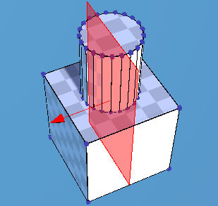
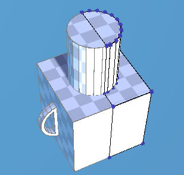
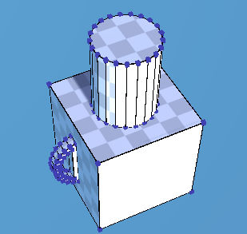

Mirror Tool ¶
{kind=link}
Mirrors a mesh along its local X,Y or Z Axes. When the mirror mode is enabled, every change will be reflected to the other side each time the mesh is modified.
Steps - Start Mirror Mode¶
- Select
Mirror Tool. - Adjust
Axis,DistanceandInvertproperties to set the mirror plane. - Click on
Startbutton.
Note
You can move the mirror plane by dragging the arrow or clicking a vertex.
Steps - Confirm¶
- Select
MirrorTool. - If you want to leave a boundary between the original part and the mirrored part, check
Leave Boundaryproperty.
Properties¶
- Axis
- Plane mirror axis
- Invert
- Inverts the direction of the plane mirror.
- Distance
- The distance of the plane mirror
- Boundary
- How to deal with the boundary edges between the edited part and the mirrored part.
Remove: Removes the boundary edges.Remain: Remains the boundary edges.Ignore: Ignores the polygons across boundary edges as mirroring is done.
- Start
- Starts the mirror mode.
- Done
- Finishes the mirror mode.

{kind=link}
Sets the Mirror Plane

{kind=link}
Starts the mirror mode.

{kind=link}
Fininsh the mirro mode.